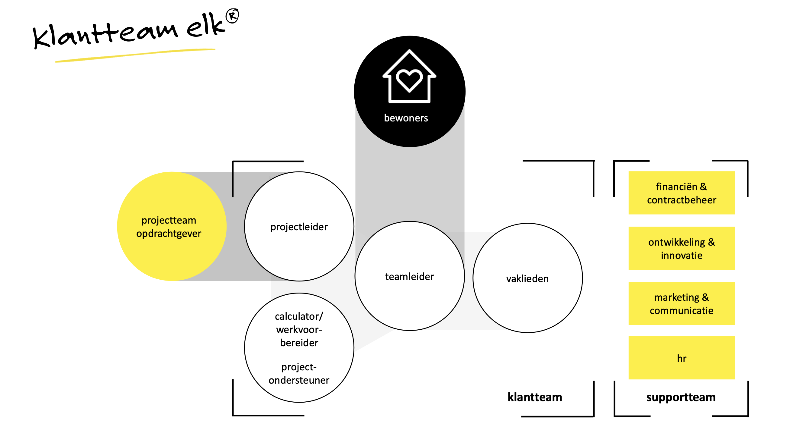

Smart Business
Als student Elektrotechniek heb ik eigenlijk vrij weinig ervaring met business-vraagstukken. Ik ben gewend om te kijken naar technische oplossingen en hoe ik die praktisch kan maken. Tijdens Smart Business kreeg ik echter te maken met onderwerpen als het Value Proposition Canvas, Business Model Canvas en processen binnen organisaties. Daardoor moest ik opeens heel anders nadenken: niet alleen over wat je technisch kunt maken, maar ook waarom een klant dat zou willen en hoe je de organisatie zó inricht dat je kunt leveren wat je belooft.
Value Proposition Canvas
Het Value Proposition Canvas was een eerste eyeopener. In plaats van te kijken naar wat jij als maker of bedrijf wilt maken, moet je juist uitzoeken welke waarde je toevoegt voor de klant. Met vragen als: “Welke problemen los je op?” en “Hoe maak je het leven van de klant makkelijker of leuker?” leer je je inleven in degene die je product of dienst gaat gebruiken. Voor mij was dat compleet nieuw, omdat ik normaal gesproken naar de technische kant kijk, zoals spanningen en componenten. Hier moest ik ineens denken in termen van klantvoordelen. Dat maakte duidelijk hoe belangrijk het is om de klantbehoefte echt centraal te zetten.
Business Model Canvas (BMC)
Na het Value Proposition Canvas gingen we aan de slag met het Business Model Canvas (BMC). Dit model laat zien hoe een organisatie waarde creëert, levert en behoudt, met aandacht voor klantsegmenten, kanalen en kostenstructuur. Dankzij de casus van Geert Rensen (Chief Customer Officer bij Be Informed) kregen we een praktijkvoorbeeld van hoe een bedrijf zijn strategie kan vormgeven. Het was interessant om te merken hoe de klantwaarde in elk onderdeel van het BMC terugkomt. Dat idee was voor mij nieuw: ik had niet eerder beseft hoe sterk alles binnen een organisatie met elkaar samenhangt.
Agile organiseren, lean, scrum
In week 5 kwamen Agile, lean en scrum aan bod. Hiervoor brachten we een bezoek aan Elk, een bedrijf dat renovaties uitvoert en de bewoner centraal stelt. Ze willen ‘geen gedoe’ en werken daarom met klantteams. Deze aanpak sluit aan op de principes van lean en scrum. We kregen zo een duidelijk voorbeeld van hoe je organisatie wendbaar kunt inrichten en continu kunt blijven verbeteren. Voor mij als technisch student was het verrassend dat deze ‘agile mindset’ ook buiten de IT-wereld zo’n grote rol kan spelen—zelfs in de wereld van woningrenovatie.
Target Operating Model (TOM)
Vervolgens doken we in het Target Operating Model (TOM). Dit model laat je nadenken over hoe je bedrijf is ingericht en of je in staat bent om waar te maken wat je aan de klant belooft. Paul Kalis van Hiltermann liet ons zien hoe je processen, mensen en IT op elkaar afstemt. Ondanks dat het soms een abstract en complex verhaal kan zijn, besefte ik opnieuw dat een technische oplossing pas nuttig is als de organisatie eromheen ook goed werkt. Het hele bedrijf moet als een geoliede machine functioneren, anders haal je de beloftes aan je klant niet waar.
Process Mining
Tot slot kregen we een workshop process mining van Thomas Lautenbach. Hierbij kijk je op basis van data hoe processen in een organisatie echt verlopen. Het combineert de bedrijfskundige kant—het in kaart brengen van processen—with het analyseren van data. Met software als Disco kun je zien waar knelpunten of inefficiënties zitten. Voor mij sloot dit meer aan op mijn technische achtergrond, omdat het inzicht in data de sleutel vormt. Je ontdekt hoe de organisatie daadwerkelijk functioneert en kunt zo heel gericht verbeteringen voorstellen.
Wat ik heb geleerd
Al met al merkte ik dat Smart Business me dwong om breder te denken dan alleen het technische domein. Ik leerde hoe belangrijk het is om de klantbehoefte centraal te zetten en je organisatie zó te structureren dat je daadwerkelijk kunt leveren wat je belooft. Door te kijken naar modellen zoals het Value Proposition Canvas, BMC en TOM, en door praktijkvoorbeelden van bedrijven als Elk n te zien, besefte ik dat techniek alleen niet voldoende is. Het moet onderdeel zijn van een groter geheel. Voor iemand met een elektrotechnische achtergrond was dat een flinke switch, maar het heeft mijn blikveld enorm verbreed. Ik weet nu dat wanneer je wilt dat een (technische) oplossing echt aanslaat, je niet kunt negeren wat er bij de klant en in de organisatie speelt.